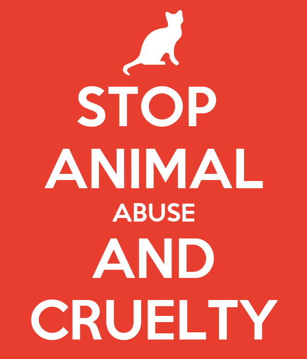

Health Effects of Animal Cruelty
Psychological Aspects of Abuse and Neglects

Animal cruelty can have major negative impacts on the animals. Some of the effects are long term, short term or deadly to the animal.
Animal cruelty includes intentional, malicious acts of harm and less clear-cut situations where the needs of an animal are neglected.
Violence against animals has been linked to a higher likelihood of criminal violence and domestic abuse. Continuously chaining or tethering a dog outside can lead to painful sores on the neck,
increased anxiety and other negative effects on the animal's physical and psychological well-being.
The animals whose abuse is most often reported are dogs, cats, horses and livestock. Undercover investigations have revealed that animal abuse abounds in the factory farm industry. But because of
the weak protections afforded to livestock under state cruelty laws, only the most shocking cases are reported, and few are ever prosecuted.
Go to Top
THE ABUSE
The animal's psychological state, and resultant behaviors, put the animal at risk for being abused.
There is no question that disapproval of certain behaviors in pet animals can lead to harsh punishment;
it is believed by many that certain behaviors can increase the risk of being abused.
Behaviors that may put an animal at risk
- The need for constant supervision
- Urination and defecation in the house
- Resistant or destructive behavior
- Aggressive behavior
- Excessive noise
These behaviors are well-known to often be caused by underlying emotional distress, such as anxiety, fear,
boredom, frustration, and social deprivation. Accordingly, psychological/emotional factors that are a characteristic
of the animal may play a role in eliciting maltreatment by an abuser. Distinguishing cause and effect is often difficult
and in many cases impossible, as trying to determine the chronology of abuse and undesirable behavior frequently results in confusion.
Go to Top
THE SUFFERING
The psychological/emotional factors are the inflicted pain that cause the animal to suffer.
Emotional neglect is a failure to fulfill the animal's emotional needs. Serpell has suggested that emotional needs, such as the need
for social companionship, have acquired many of the properties of a physical need such as hunger and that satisfying these needs is
required for a state of happiness and fulfillment.
Categories of emotional abuse identified in children that have direct application to animal care
- Rejecting
– An active refusal to provide emotional support and nurturing to a dependent in need of such support with knowledge that
the individual is harmed by such action. Animal example: a person refusing to give a crying orphaned puppy any attention because it “needs to get used to loneliness."
- Terrorizing
– The creation of a “climate of fear” or unpredictable threat or hostility, preventing the victim from ever experiencing feelings of
safety and security. Included here is the use of discipline and punishment that is inconsistent and capricious, extreme, or bizarre. Animal example: the use of harsh punishment in training ("breaking") circus elephants to achieve control, domination, intimidation, and rule by fear.
- Taunting
– Any teasing, provoking, or harassing that causes frustration, anger, or mental anguish. Animal example: taunting a dog at the end of a tether or from behind
a barrier such as a fence or cage bars.
- Isolating
– The active prevention of social interactions and companionship (in social animals). Animal example: Banishing a dog to the garage frequently and/or for excessively long
periods of time, preventing any social contact with humans or other animals, as punishment.
- Abandonment
– The desertion and termination of care of a dependent individual by the caregiver. This category of abuse overlaps with neglect because of the failure to meet the victim's needs; however, it is an active rather than passive behavior on the part of the caregiver. Animal examples: discarding a litter of kittens in a garbage dumpster, tossing a pet dog onto the roadside in the country to fend for himself, or moving out of an apartment and leaving a pet animal behind.
- Overpressuring
– Excessive demands and pressure placed on the individual to perform or achieve. Animal examples: situations in which performance or work animals—such as sled dogs, race horses, circus animals, desert caravan camels, carriage horses, and marine mammals used in shows— are driven to perform in excess of their physical or emotional capabilities.
Go to Top
THE EFFECT
The consequences of abuse and neglect in the animal involve both short- and long-term adverse psychological/emotional effects.
It is well-established that emotional abuse causes psychological harm. In research that looked at humans who had been the victims of torture, for example, it has become obvious that the main objective of torture is not to inflict physical wounds or injuries; on the contrary, the objective is to leave psychological wounds. In animals, an extensive body of research has demonstrated that psychological stressors can cause severe emotional damage which can persist for months or years. But does physical abuse cause psychological harm? Again looking at humans who have survived torture, it has been determined that the real purpose of physical torture, which does bear physical scars, is to have a major impact on the long-term psyche of an individual.
Immediate harm and long-term harm
- The immediate harm of abuse and neglect consists primarily of the unpleasant experience, the physical and/or emotional discomfort, distress, or suffering. This can be in the form of fear, anxiety, loneliness, helplessness, depression, frustration, boredom, grief, physical pain, ambient temperature extremes, severe pruritus, nausea, respiratory distress, etc.
The other type of immediate harm is the harmful effects of emotions and “stress” on the physical health and processes of the body
- The long-term harm of abuse and neglect is not as well-studied in animals as it has been in humans. One major impediment to such study is that unlike the situation in people, pet animals often have an unknown history of many animals. And one cannot ask mature animals with an unknown background what happened to them at an earlier age. The result of this is that it has become extremely common for pet owners, as well as veterinarians and clinical behaviorists, to assume earlier abuse when an animal shows certain signs such as an inordinate fear of humans.
Go to Top